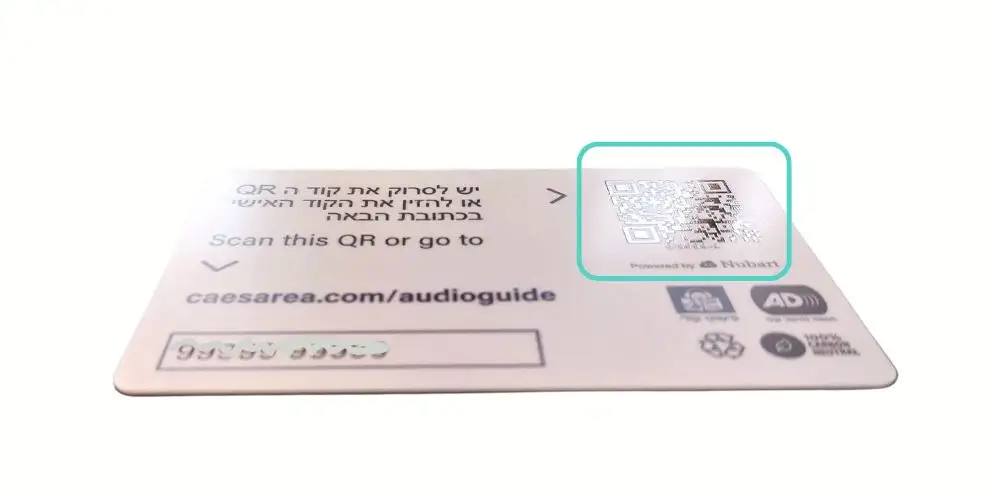

Équipe Nubart
(Article rédigé par des humains)
Fonctionnalités inclusives des audioguides numériques accessibles de Nubart
Les musées doivent garantir que tous les visiteurs — y compris ceux présentant des handicaps visuels, auditifs ou cognitifs — puissent pleinement profiter de l'expérience culturelle. Les audioguides numériques sont essentiels pour rendre les musées véritablement accessibles et inclusifs.
Chez Nubart, notre objectif est de lever les obstacles grâce à la conception d’audioguides numériques accessibles, conformes aux normes internationales. Dans cet article, découvrez les mesures concrètes que nous mettons en œuvre pour offrir à tous une visite véritablement inclusive.

Accessibilité des audioguides numériques pour les visiteurs malvoyants
La volonté de rendre les musées accessibles aux personnes aveugles remonte à 1913, lorsque John Alfred Charlton Deas, alors conservateur du Sunderland Museum, invita les élèves de l’école pour non-voyants de Sunderland à explorer certaines œuvres par le toucher. Le succès de cette initiative l’incita à l’étendre aux adultes aveugles.

Cependant, l’accessibilité des musées pour les non-voyants ne se limite pas aux audioguides. Les étiquetages en braille et les dispositifs tactiles qui reproduisent l’objet et le rendent perceptible du bout des doigts sont essentiels pour l’inclusion.

Toutefois, les audioguides jouent un rôle majeur en enrichissant la visite d’une personne non-voyante, en faisant appel à l’ouïe plutôt qu’à la vue. Si le musée n’est pas équipé de stations tactiles, l’audioguide devient bien souvent la seule source d’information disponible sur l’œuvre présentée.
QR code détectable au toucher
Les audioguides PWA s’accèdent généralement via un QR code ; il est donc essentiel d’en garantir l’accessibilité. Une personne non-voyante peut scanner un QR code avec l’appareil photo de son smartphone dès lors qu’elle en connaît l’emplacement et peut le pointer correctement.
Par exemple, le Parlement autrichien a résolu ce problème en plaçant plusieurs QR codes embossés sur les murs à côté de chaque point d’intérêt, permettant leur localisation tactile.
Sur le même principe, les cartes audioguide Nubart sont également imprimées en léger relief afin que les visiteurs malvoyants puissent les reconnaître au toucher. Comme un seul QR code donne accès à l’intégralité du contenu et que la carte reste en main, la consultation de l’audioguide devient à la fois isée et discrète.
Descriptions audio des œuvres
Dans un audioguide véritablement accessible, il est indispensable de proposer une piste audio dédiée à la description de l’œuvre. Cette séquence décrit visuellement l’objet afin que les personnes aveugles puissent en construire une représentation mentale, avant l’explication classique de l’audioguide.
Au sein de Nubart, la fonctionnalité « description audio » est accessible à tout moment depuis le menu des langues.

Accessibilité des vidéos diffusées en salle
Le principe de la description audio s’étend aux vidéos : un musée véritablement accessible propose toujours une piste sonore décrivant l’action à l’écran.
Cela peut parfois poser problème : Les vidéos ont souvent une seule sortie audio. Pour offrir plusieurs langues, y compris les descriptions audio, il faut prévoir un casque par langue. Or, le partage de casques pose des questions d’hygiène, et il n’est pas évident pour une personne non-voyante d’identifier le casque diffusant la description audio.

Nubart a breveté une technologie innovante pour répondre à cette problématique, Nubart SYNC.
Nubart SYNC permet de synchroniser une vidéo avec une bande-son parfaitement alignée, dans n’importe quelle langue, y compris les descriptions pour malvoyants ou les pistes en langage simplifié pour personnes ayant des difficultés cognitives. Contrairement aux solutions complexes et coûteuses, Nubart SYNC ne nécessite qu’une connexion Internet pour assurer la synchronisation.
Accessibilité des cartes et de la géolocalisation
Naviguer sur une carte constitue un défi complexe pour une personne aveugle. Actuellement, nos cartes interactives sont dotées de labels ARIA, permettant aux visiteurs malvoyants de localiser les points d’intérêt. Notre fonctionnalité de géoscroll permet également l’activation automatique de pistes audio à l’approche d’un point d’intérêt.
Sur demande, nous pouvons ajouter des transcriptions optimisées pour les lecteurs d’écran, fournissant une description textuelle dynamique du contenu affiché, s’adaptant au zoom et au déplacement sur la carte.
Développer un CMS accessible : la vraie portée de « l’accessibilité »
Les smartphones modernes embarquent de nombreuses applications destinées à faciliter la vie des personnes malvoyantes : TalkBack sur Android et VoiceOver sur iPhone. Ces lecteurs d’écran, pilotés par des gestes, annoncent vocalement tout ce qui s’affiche à l’écran, du niveau de batterie à l’identité de l’appelant. VoiceOver est en général perçu comme plus performant que TalkBack, ce qui explique pourquoi les iPhones sont aujourd’hui majoritairement utilisés par les personnes aveugles.
Les audioguides Nubart fonctionnent en tant que progressive web apps (PWA) sur navigateur, et non comme des applications autonomes. Ainsi, tout visiteur peut ouvrir l’audioguide dans son navigateur mobile, habituellement après avoir scanné un QR code. Pour garantir l’accessibilité, notre équipe technique a développé le système de gestion de contenu (CMS) selon les principes du design universel, afin que chaque élément interactif soit clairement étiqueté et logique lors de l’utilisation d’un lecteur d’écran. Cela permet aux visiteurs malvoyants d’obtenir un retour vocal pertinent pour chaque bouton ou étape de navigation, avec des explications claires sur chaque action possible.
Afin d’aller plus loin et d’assurer la conformité avec les Web Content Accessibility Guidelines (WCAG) et l’European Accessibility Act, Nubart a mis en place de nombreuses mesures techniques, dont :
- Des messages clairs et explicites sur les écrans de sélection de la langue et de navigation principale, pour orienter les utilisateurs à chaque étape.
- Un étiquetage cohérent des composants (sélecteurs de langue, champs de recherche, modales), compatible clavier et lecteurs d’écran.
- Des commandes audio et vidéo annotées pour faciliter l’usage des technologies d’assistance.
- Une correction automatique du contraste des couleurs, garantissant la visibilité des boutons et des cartes en basse vision.
- Gestion du focus et étiquetage précis dans les dialogues (cartes, panoramas, boîtes de recherche), assurant une navigation fiable et une description de chaque élément.
- Tous les contenus d’image disposent d’un texte alternatif ; en cas d’absence de titre, les éditeurs sont avertis pour qu’une légende soit ajoutée, facilitant la lecture d’écran.
- Des alertes de contraste pour prévenir l’éditeur si le thème couleur ne respecte pas les seuils minimums.
Des tests utilisateurs réalisés avec des personnes aveugles pour valider l’expérience inclusive de nos audioguides.
Ces bonnes pratiques rendent les audioguides Nubart accessibles à tous et aident les institutions culturelles à satisfaire leurs obligations légales tout en offrant une expérience véritablement inclusive.
Accessibilité pour les publics sourds et malentendants
DDiffuser le son via smartphone constitue une solution bien plus adaptée aux personnes sourdes ou malentendantes que les haut-parleurs ou les audioguides traditionnels. En effet, aujourd’hui, la quasi-totalité des visiteurs malentendants dispose d’un smartphone compatible avec une aide auditive (norme M3 ou M4), ou avec une boucle à induction (norme T3 ou T4).
Il existe deux approches pour rendre le contenu accessible aux personnes malentendantes : les signoguides (pistes vidéo en langue des signes) et la transcription textuelle. Chacune présente des avantages et des limites. Idéalement, la combinaison d’une version en langue des signes et de la transcription garantit une accessibilité maximale au public sourd.
Signoguides
Lorsque cette option est activée, Nubart ajoute au menu des langues des vidéos interprétées en langue des signes par un professionnel, en lieu et place des pistes audio.
Problématiques liées aux signoguides :
-
La langue des signes varie, aussi bien dans son lexique (ensemble des gestes) que dans sa grammaire : la langue des signes espagnole n’est pas la même que l’anglaise, par exemple. Il existe même des différences entre la langue des signes britannique et américaine. Les Britanniques utilisent un alphabet bimanuelle (deux mains), alors que les Américains emploient une seule main. Le Système international de signes (SSI) existe, mais il n’est pas assez précis pour garantir une parfaite traduction des contenus. Il est donc recommandé de proposer deux signoguides : l'un dans la langue principale de l’audioguide, l'autre en langue internationale des signes.
-
L’intégration de signoguides ne garantit pas l’accessibilité à l’ensemble des visiteurs sourds : sur les 360 millions de personnes atteintes de déficience auditive dans le monde, seules environ 70 millions utilisent la langue des signes comme langue maternelle (statistiques OMS).
-
La création de signoguides nécessite l’intervention de professionnels spécialisés et engendre un coût important.
-
Les signoguides sont délivrés sous forme vidéo. Or, ces fichiers très volumineux ne sont généralement pas compatibles avec le mode hors-ligne dans les lieux où la couverture réseau est limitée. Néanmoins, si le musée dispose d’un Wi-Fi ou d’une bonne connexion mobile, la diffusion en streaming fonctionne parfaitement.
Transcriptions : complément ou alternative ?
Nubart permet d’accéder à la transcription du texte de l’audioguide via un bouton situé à côté de chaque piste : un clic ouvre alors une fenêtre superposée contenant le texte. Cette option est totalement compatible avec le fonctionnement hors-ligne si le musée présente des difficultés de couverture réseau.
La transcription est sans doute la solution d’accessibilité la plus économique à mettre en œuvre. Toutefois, elle ne répond pas à la totalité des problématiques rencontrées par les personnes malentendantes.
Difficultés de lecture chez les personnes sourdes :
- Les personnes sourdes prélinguales (devenues sourdes avant l’acquisition du langage) éprouvent souvent des difficultés à lire et à écrire : même si elles connaissent les lettres, elles peuvent ne pas associer orthographe et sons de la parole. En conséquence, la transcription seule ne suffit pas pour tout le public sourd.
Sous-titrage des vidéos
Comme pour la transcription, le sous-titrage vidéo permet aux personnes malentendantes de comprendre le contenu sonore des séquences diffusées.
Voici une vidéo récapitulative présentant les solutions Nubart en matière d’accessibilité :
Quelle que soit votre situation, contactez-nous. L’équipe Nubart analysera votre cas et élaborera une proposition personnalisée adaptée à vos besoins.